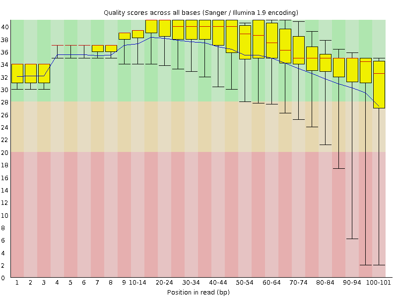
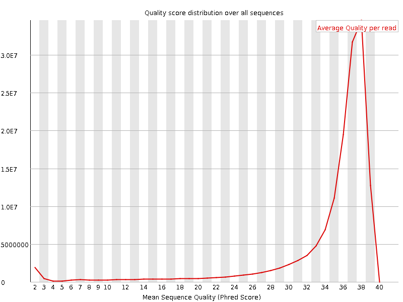
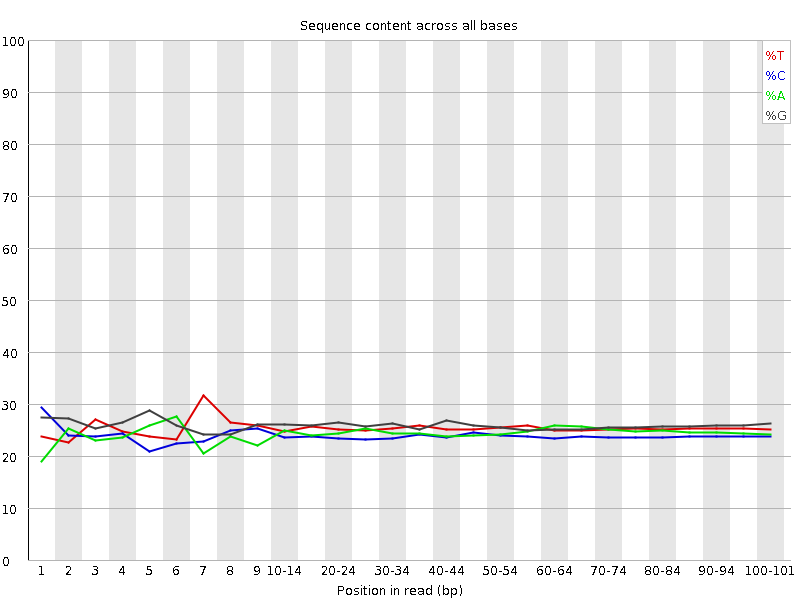
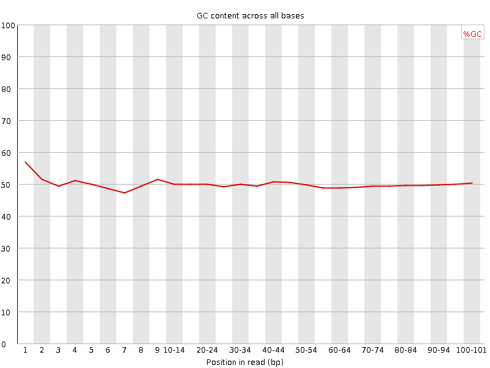
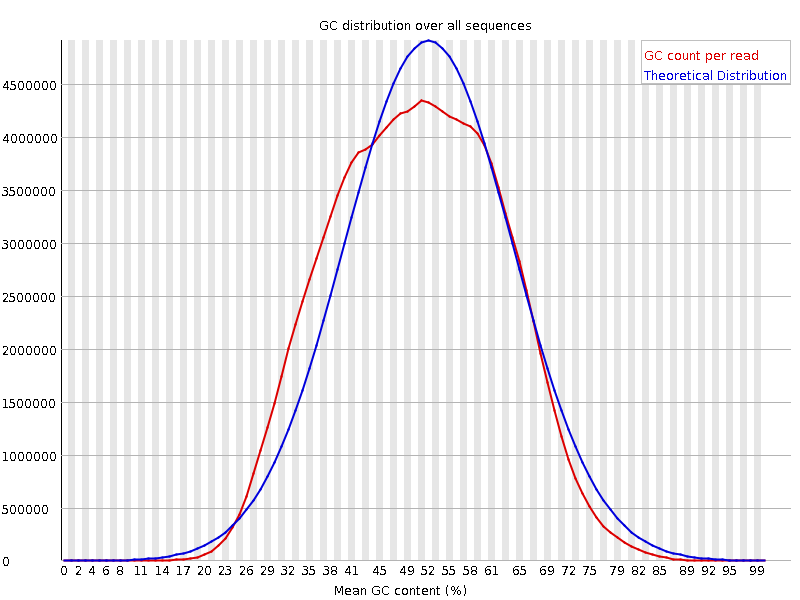
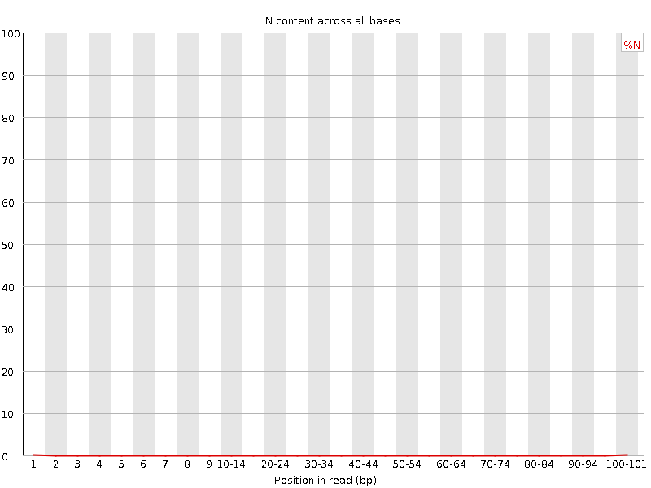
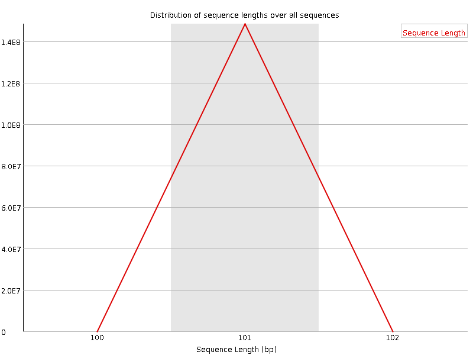
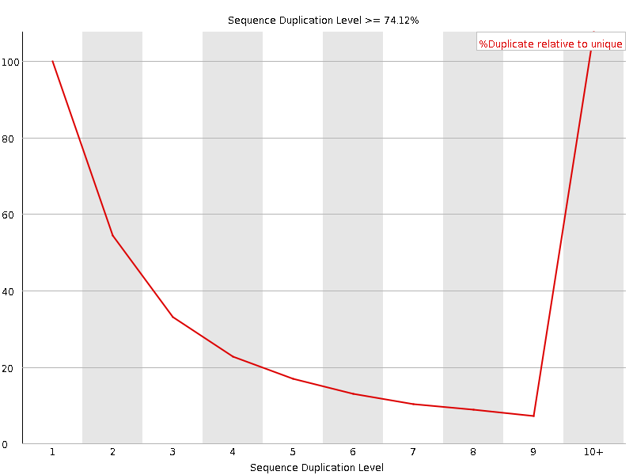
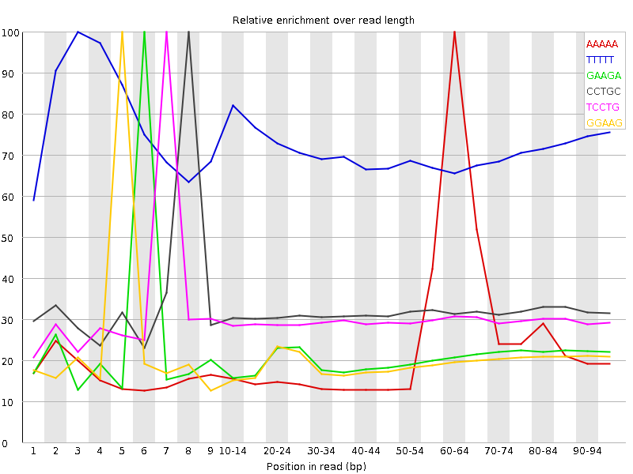

![[OK]](Icons/tick.png) Basic Statistics
Basic Statistics
| Measure | Value |
|---|---|
| Filename | SRR534293_2.fastq |
| File type | Conventional base calls |
| Encoding | Sanger / Illumina 1.9 |
| Total Sequences | 148437796 |
| Filtered Sequences | 0 |
| Sequence length | 101 |
| %GC | 49 |
Per base sequence quality

Per sequence quality scores

![[WARN]](Icons/warning.png) Per base sequence content
Per base sequence content

Per base GC content

Per sequence GC content

Per base N content

Sequence Length Distribution

![[FAIL]](Icons/error.png) Sequence Duplication Levels
Sequence Duplication Levels

Overrepresented sequences
| Sequence | Count | Percentage | Possible Source |
|---|---|---|---|
| CGGCATTCCTGCTGAACCGAGATCGGAAGAGCGTCGTGTAGGGAAAGAGT | 463093 | 0.3119778199886503 | Illumina Single End PCR Primer 1 (100% over 31bp) |
Kmer Content

| Sequence | Count | Obs/Exp Overall | Obs/Exp Max | Max Obs/Exp Position |
|---|---|---|---|---|
| AAAAA | 78288160 | 5.9266424 | 24.041475 | 60-64 |
| TTTTT | 65044910 | 4.2546906 | 5.9375496 | 3 |
| GAAGA | 35996595 | 2.466249 | 11.801552 | 6 |
| CCTGC | 32035345 | 2.4629147 | 7.698512 | 8 |
| TCCTG | 32720120 | 2.3673048 | 7.896691 | 7 |
| GGAAG | 34253795 | 2.2326243 | 11.201111 | 5 |
| AAGAG | 32131780 | 2.2014575 | 11.1365795 | 7 |
| CTGCT | 29774300 | 2.154174 | 7.0473533 | 9 |
| GGGGG | 33824550 | 1.9952707 | 5.9321327 | 40-44 |
| TTCCT | 26957495 | 1.9911125 | 7.1561365 | 6 |
| TAAAA | 24866300 | 1.8282359 | 5.8289924 | 55-59 |
| GGGAA | 27067840 | 1.7642517 | 5.121857 | 20-24 |
| AGAGC | 24756305 | 1.7504532 | 12.3058815 | 8 |
| TTAAA | 24135130 | 1.7233722 | 5.3483057 | 55-59 |
| GAGCG | 15702465 | 1.0562432 | 10.845147 | 9 |
| GGCAT | 15193600 | 1.043359 | 5.3956637 | 2 |
| CATTC | 13481915 | 1.0253199 | 6.131959 | 4 |
| ATTCC | 12476320 | 0.9488429 | 6.263697 | 5 |
| GCATT | 13338645 | 0.935108 | 5.5590105 | 3 |
| CGGAA | 13158915 | 0.93043226 | 11.541924 | 4 |
| GATCG | 11844195 | 0.81335217 | 12.466276 | 1 |
| TCGGA | 11416755 | 0.78399944 | 10.5227785 | 3 |
| ATCGG | 10796095 | 0.7413781 | 12.388562 | 2 |
| CGGCA | 8806245 | 0.6426057 | 5.5554433 | 1 |